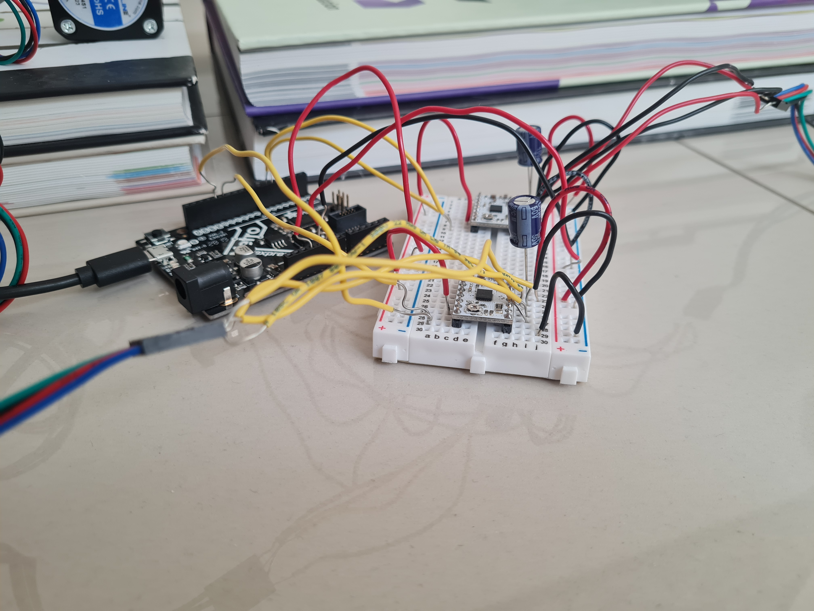
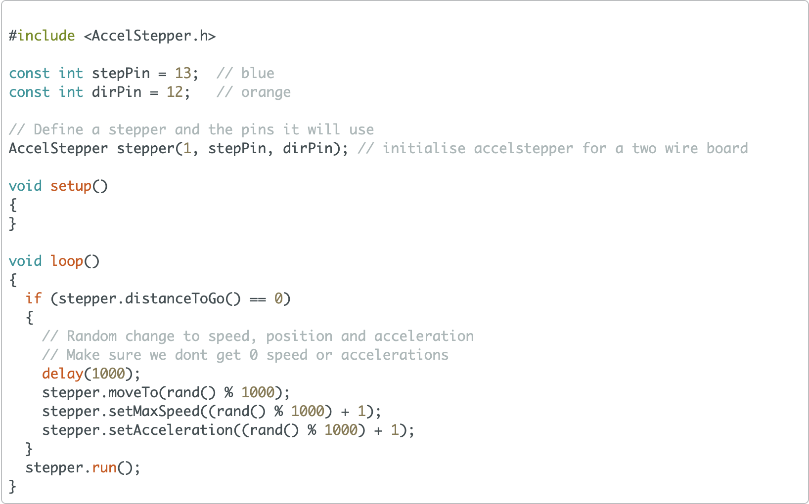

For this assignment I decided to create a cleaner or dispenser since it can be used to do both. It basically consists of two stepper motors, one on each side and in the center of both of them, there would be a cardboard box with a little slider that would push everything that you put in the cardboard box. Both steppers would be connected by a line of string so that when one pulls, the other one releases string so that the slider can move. My original idea was to make a liquid dispenser, but after looking at other ways that I could make it different, I setteld with this cleaner/dispenser. During this process, I learned to use the AccelStepper library as well as calculating the right amount of speed and acceleration so that the slider could push everything out of the box. Since I used the Metro this time, I was planning on using Google Firebase, but this is not possible with this board so instead I decided to experiment with the Serial Monitor until it finally worked. In the Serial Monitor, you would either enter 0, 1 or 2, each one corresponding to how much you would clean the box. 0 would be the origin point, 1 would be half the box, and 2 would be the whole box. I also learned to calculate the right amount of string that each stepper motor needed so that they wouldn't start moving around. The first step in this process was creating the whole setup with the appropriate string and setting up the Metro.

The first step was creating the cardboard box and the slider. I needed something that wasn't too big or to small so that different objects of different sizes could fit in the box. I finally settled with the multimeter box since it had a great size and all the pieces were already there and I just needed to cut them. Using scissors, I cut two of the sides and used one of the pieces of the slider. Now that this was done, it was time to focus on the stepper motors. At first, I used a LEGO black piece and a wood stick in order to move the slider, but after trying this, I learned that this setup basically only rotates the piece and will never move it back or to the front. After looking at Nathan's image of his water dropper, I thought of using the string in the kit so I just used the metal piece and tied some of the string to that side. Then, using a toothpick, I made two holes in the slider so that the string could pass through it. I passed the string several times and then I grabbed the second stepper motor and tied the rest of the string to that motor. This was very tricky since the string had some sort of adhesive that started to wear off with the continuos use of the cleaner/dispenser. Then, I had to connect both stepper motors to the breadboard. I decided to use the Metro M0 Express for this assignment since it had a 3.3 and 5 volts pins. Using the wiring example that we saw in class, I grabbed all the materials and connected the first stepper motor. One tricky part that I encountered was connecting the stepper motors to the breadboard since it needs four different wires and I had different sizes of different wires so it was kind of complicated as well as figuring out what went where since after wiring the first motor, there were a lot of cables connected to different parts. However, when I was wiring the second motor with the same design, I made a slight adjustment which was that the 3.3 volt pin in the Metro went to the power rail of the breadboard and then it would split into each of the stepper motors. The first stepper motor would be connected to pins 13 and 12 of the Metro and the second one would be connected to pin's 5 and 6. After everything was wired up, I decided to connect the Metro to my computer in order to give it some power and the motors started to spin. However, the string started to get tied in the wrong places so I disconnected the Metro. However, everything worked fine. Now that all the wiring had been made, I only had to code the whole mechanism which turned out to be more difficult than I thought.
The first step in making the code was opening Arduino IDE, and creating an new file. After doing this, I decided to start by moving one of the stepper motors. For this, I used the example shown in class as a base since I had two stepper motors. After running the first code, I realized that the motor was running very slow and this would take a long time to move the whole slider. So I decided to look at the AccelStepper library and the differnet functions that they had. This is where I found that I could use the setMaxSpeed() and setAcceleration(). After playing around with the values and trying them with the stepper motor, I figured that a max speed of 600 and an acceleration of 50 would serve just fine. After figuring out those values, I needed to put them in the code. Looking at different examples, I figured that the set functions would need to go in the setup() function so that is what I did. Then, I changed all of the loop() function. The first thing that it would do is check if both motors have a distance to go of 0 meaning that they have completed any other action. Then, using the moveTo command, one stepper would move a certain number of steps and the other one would move the inverse of that number. This is so that one motor is pulling and the other one is releasing string so that the slider could move. I tried this with random moveTo values by plugging in the Metro to my computer and uploading the code. However, before uploading, I added a run() command for both stepper motors at the end of the loop() function. I ran the code and only one of the stepper motors ran and the other one just stood still. I was very confused and started to check the wiring but everything was the way it was supposed to. I then looked at the code and didn't find anything that was wrong. Just to be sure, I made a modification to the original code in which I declared both steppers with their respective pin instead of using a variable. After doing this, I uploaded the code again, and this time, both motors worked and the slider moved a long distance. Now, I just had to program the Serial Monitor input and use that to determine which way each motor moves.

Since I had no idea how to input something to Serial Monitor and using that in my code, I looked for examples of the Internet until I remembered that at the bottom of the Class 10 page there was a link about using the Serial Monitor. Looking at that page, I realized that I could use some of that code as a base and then modify it. Using Rob's first code, I played around with it and found that this just needed some slight modifications. The first one that I made was changing the while statements to if statements and getting rid of the counter variable and all the print lines. I basically would look at the input and depending on the number, it would decide how much the slider would move. Inside the second if statement which is when there is an input, I created three if statements, one for the number 0, one for 1, and the second one for 2. Then, if one of those numbers was inputted, it would either print "Resetting clean device," "Cleaning half," or "Cleaning everything." Then, for each of the if statements, it would check if both stepper motors had alreayd completed any other commands and using the moveTo() function, would move them to a certain position. However, after further thinking, I created a new variable called distance which after severial trial and errors found that moving one stepper to 2200 would move the slider all the way, would decide were each stepper motor would move. For the number zero, it would move both steppers to 0. Then, for number 1, it would move the second motor to half of the distance and the first one to half of the distance but negative. Lastly, for number 2, it would move the second motor all the distance, and the first one to negative that distance. After everything was coded, I just had to test it so I connected the Metro and uploaded the code. In order to debug, I also wanted to print the integer that was sent and it did work so I erased that line of code. Now, it was time to test it with real items.
After running several tests, in some of them, one of the motors would start to be pulled by the other which I believed was because there wasn't enought string to release so in order to fix this, I just wrapped about 3 times the string around each stepper motor. After some more tests, this problem disappeared but there was a new one, the cardboard box was kind of crooked so the slider would start to float sometimes. After tilting the box to the other side, this problem was solved. I then proceeded to do some real life tests and found that with very small items liked rice, it wouldn't push them and the slider would just go over them but with bigger objects, it worked perfectly. During this whole process, I had a lot of fun and was amazed of what I had done with house objects. One of my tests included beans in the box and the other one a bottle cap in the box: